| Né le 26 Juillet 1926, mort le 7 mars 1999 |
| Nom du film |
Date de sortie |
Affiche du film |
Scene qui a rendu le film culte |
| Eyes Wide Shut |
3 Septembre 1999 |
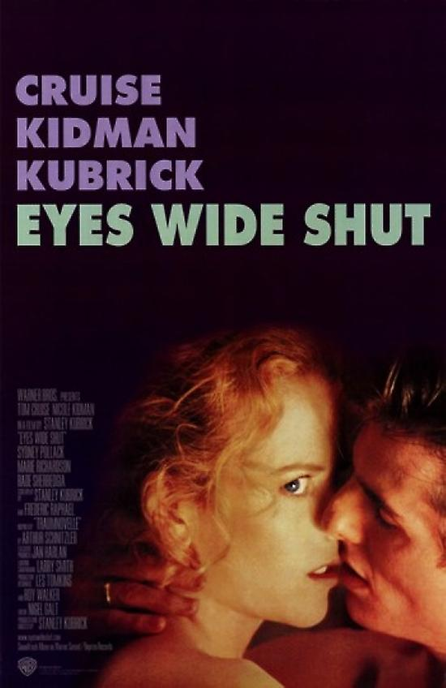
| |
| Full Metal Jacket |
21 Octobre 1987 |
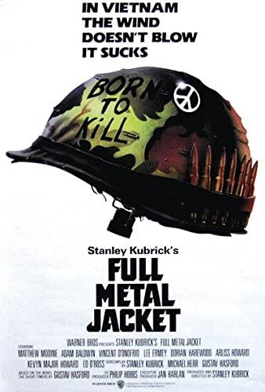 |
|
| Shining |
26 Octobre 1980 |
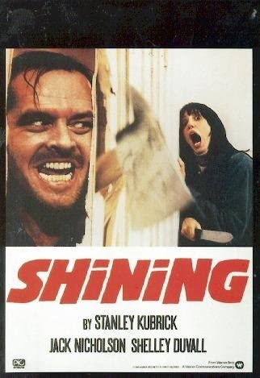 |
|
| Barry Lyndon |
24 Septembre 1976 |
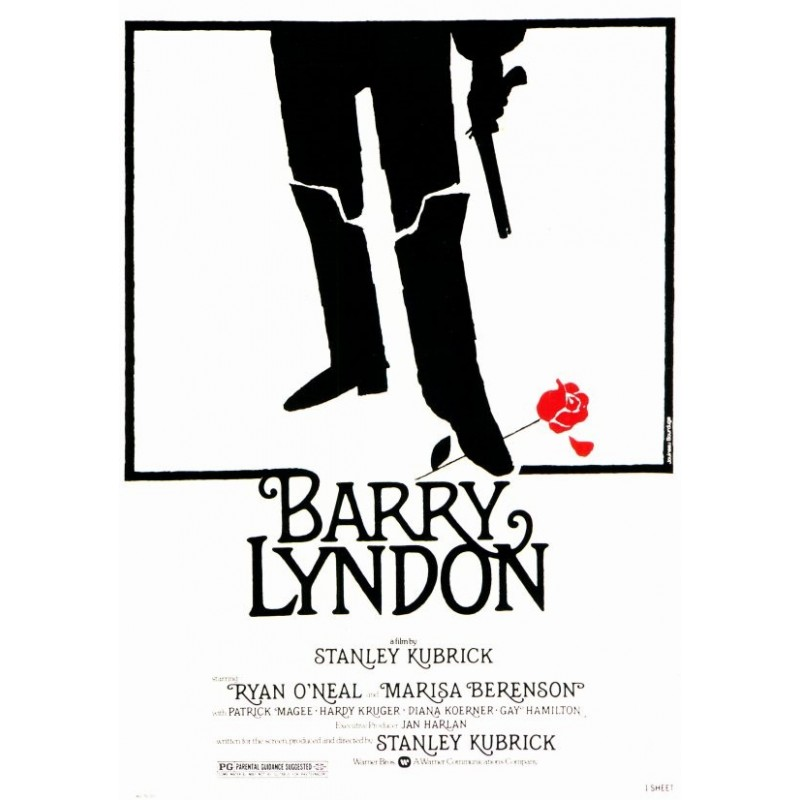 |
|
| Orange Mécanique |
21 Avril 1972 |
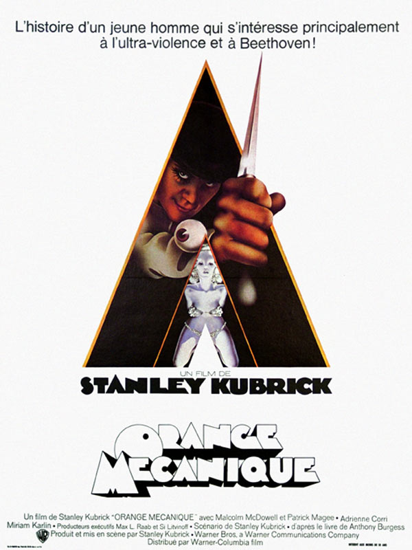 |
|
| 2001 : L'odysée de l'espace |
27 Septembre 1968 |
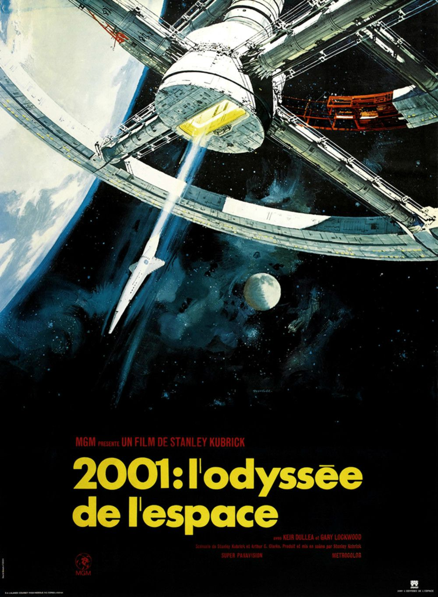 |
|
| Docteur Folamour |
10 Avril 1964 |
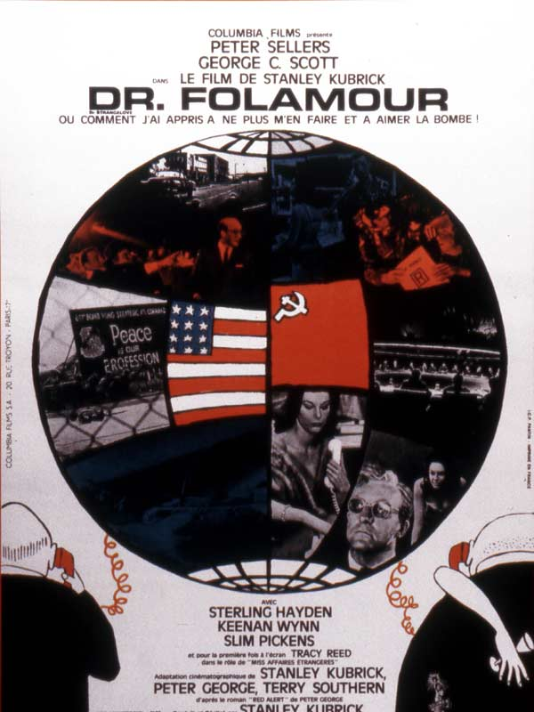 |
|
| Lolita |
14 Novembre 1962 |
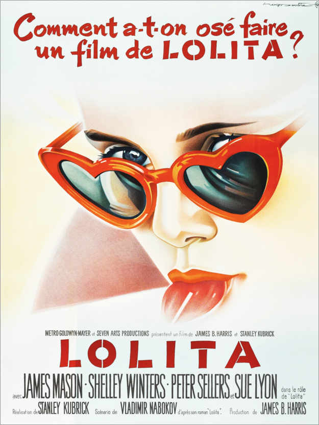 |
|
| Spartacus |
15 Septembre 1961 |
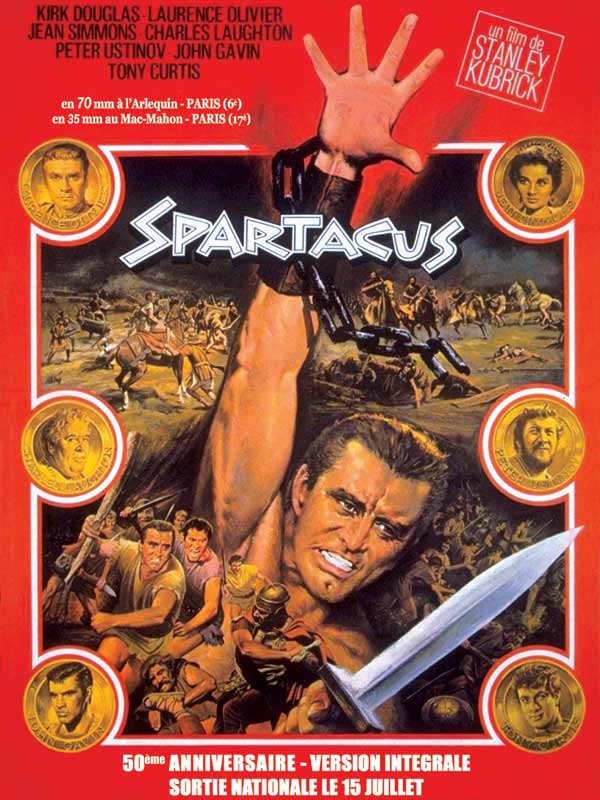 |
|
| Les sentiers de la gloire |
18 Septembre 1957 |
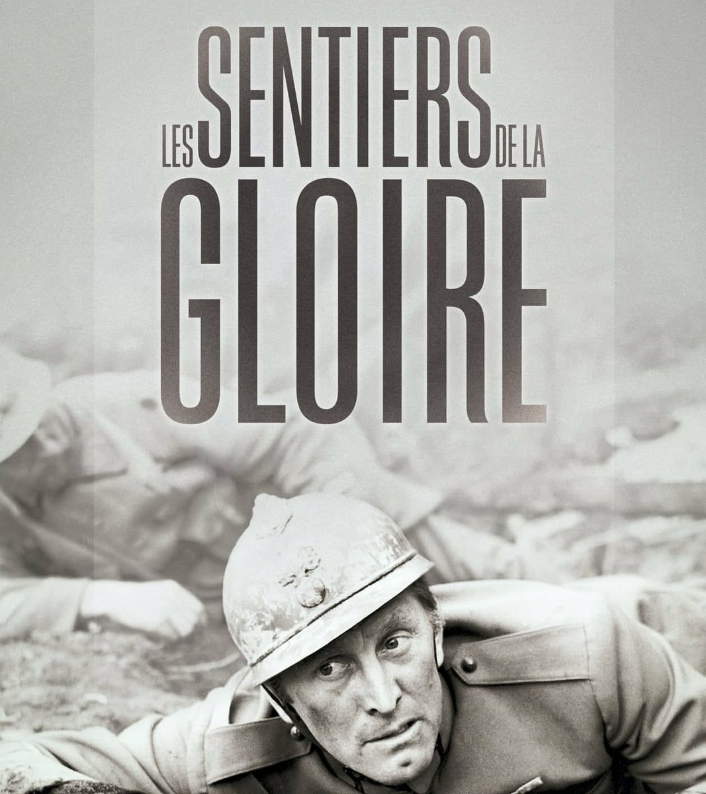 |
|
| L'ultime razzia |
3 Janvier 1957 |
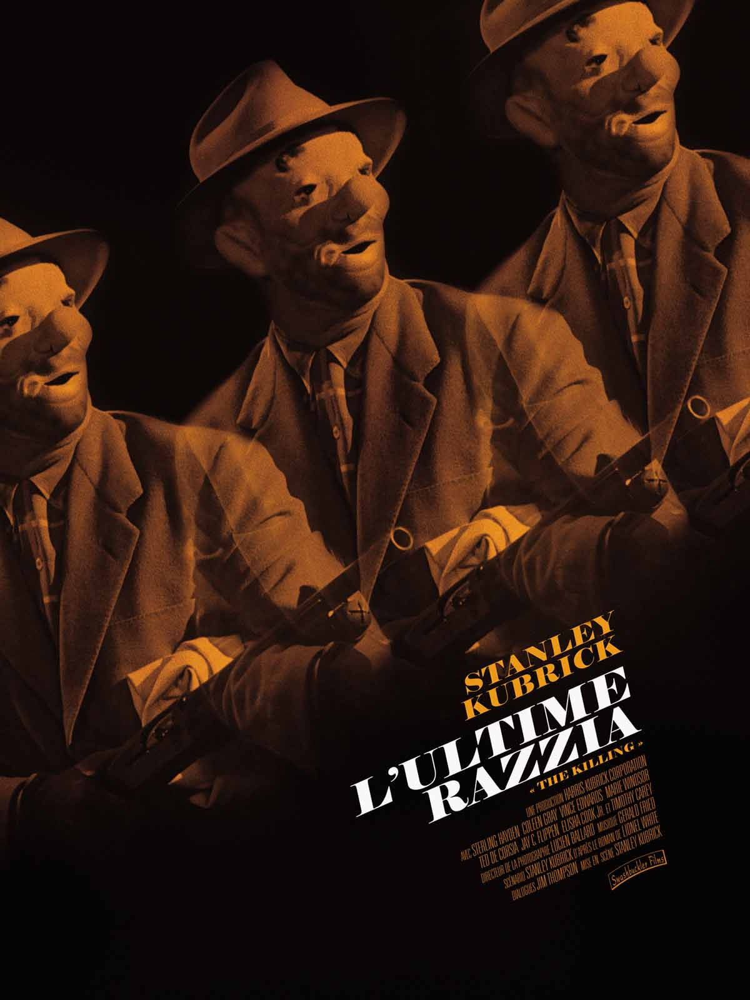 |
|
| Le baiser du tueur |
1955 |
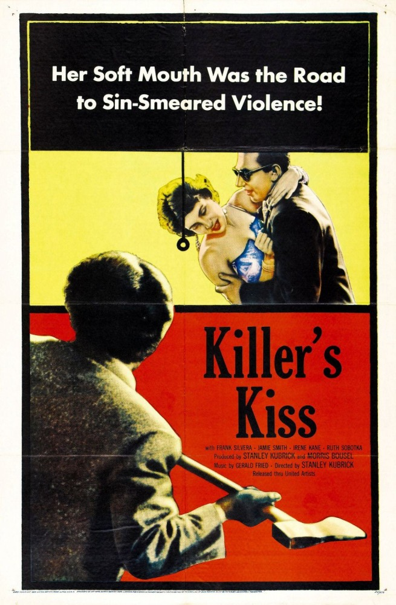 |
|
| Fear and desire |
1953 |
|
|
 Liste des films du réalisateur Stanley Kubrick du plus récent au plus ancien
Liste des films du réalisateur Stanley Kubrick du plus récent au plus ancien